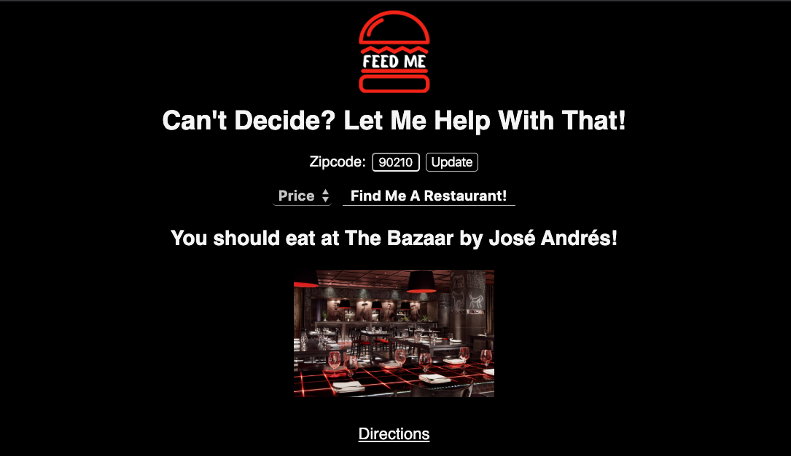
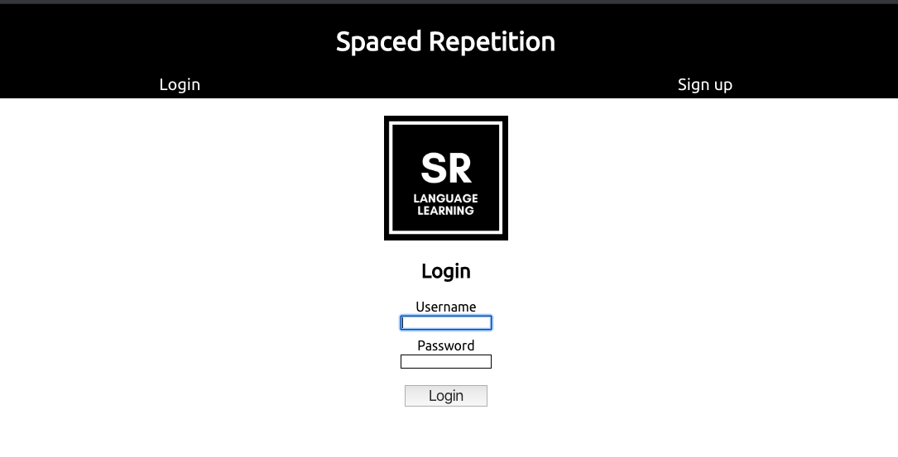
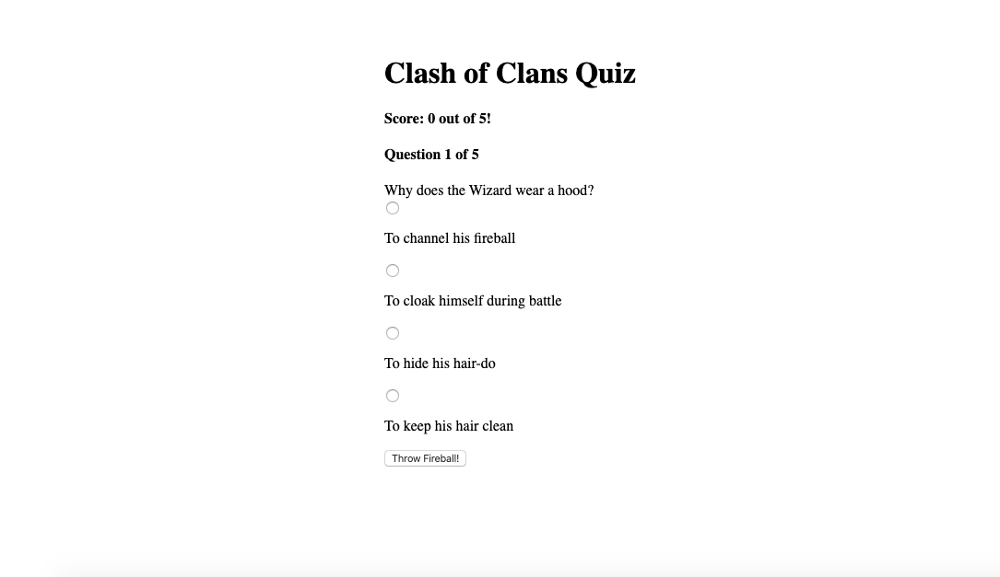

Full Stack Developer
Every application is a new adventure.

My name is Austin.
I am an enthusiastic Full-Stack web developer. Through effective problem solving and critical thinking, I strive to effortlessly implement well-rounded code for the digital age. Outside of coding I enjoy hobbies such as dancing, organic gardening, drinking coffee, chilling with my cats, and creating electronic music.
Projects
Feed Me
Full Stack Project featuring a personally built server and backend with integrated Yelp API that allows users to input their zip-code and have a random restaurant from their location returned to them. Perfect for when the choices are overwhelming and you can't decide where to eat!
Tech Stack
- HTML |
- CSS |
- AJAX
- REACT |
- NODE |
- JS
- EXPRESS |
- API |
- POSTGRESQL
Github Client Repo
Github Server Repo
Spaced Repetition
Full Stack project using Linked Lists to assist in learning a new language. This learning style will prompt users with incorrect guesses more often than correct ones. Users can create an account and after creation will be navigated to their dashboard in which they can track their scores and progress.
Tech Stack
- HTML |
- CSS |
- AJAX |
- REACT
- JS |
- NODE |
- EXPRESS |
- REST API
- POSTGRESQL |
- CYPRESS
Github Client Repo
Github Server Repo
Digi Doodle
Fully responsive pictionary game that utilizes web sockets and cookies to allow users to see the same content across multiple screens. Digi-doodle also hosts a live chat where users can make guesses on what the current drawer is drawing, and those whom guess correctly get a point. First one to 15 wins! (Requires 2 or more players to start a game)
Tech Stack
- HTML |
- CSS |
- AJAX |
- REACT
- JS |
- NODE |
- EXPRESS |
- REST API
- POSTGRESQL |
- COOKIES |
- SOCKET.IO
GitHub Client Repo
Github Server Repo